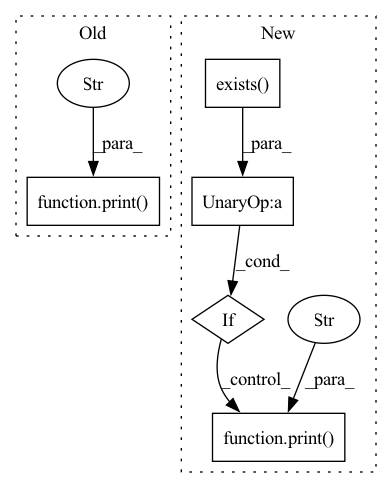

Pattern ID :19668
Before Change
dense_out_file_path = os.path.join(output_dir, f + "_dense.npy")
sparse_out_file_path = os.path.join(output_dir, f + "_sparse.npy")
labels_out_file_path = os.path.join(output_dir, f + "_labels.npy")
print(
f"Processing {in_file_path}. Outputs will be saved to {dense_out_file_path}"
f", {sparse_out_file_path}, and {labels_out_file_path}..."
)
BinaryCriteoUtils.tsv_to_npys(
in_file_path,
dense_out_file_path,
sparse_out_file_path,After Change
for i in range(24):
in_file_path = os.path.join(input_dir, f"day_{i}")
if not os.path.exists(in_file_path) :
continue
dense_out_file_path = os.path.join(output_dir, f"day_{i}_dense.npy")
sparse_out_file_path = os.path.join(output_dir, f"day_{i}_sparse.npy")
labels_out_file_path = os.path.join(output_dir, f"day_{i}_labels.npy")
print(
f"Processing {in_file_path}.\nOutput will be saved to\n{dense_out_file_path}"
f"\n{sparse_out_file_path}\n{labels_out_file_path}"
)
BinaryCriteoUtils.tsv_to_npys(
in_file_path,
dense_out_file_path,
sparse_out_file_path,In pattern: SUPERPATTERN
Frequency: 4
Non-data size: 5
Instances Fragment ID: 64019096
Project Name: facebookresearch/torchrec
Commit Name: ad681b29713836ccb4403a66d6fe626ef752e745
Time: 2022-10-07
Author: samiw1@fb.com
File Name: torchrec/datasets/scripts/npy_preproc_criteo.py
M Class Name: AnonimousClass
N Class Name: AnonimousClass
M Method Name: main(1)
N Method Name: main(1)
M Parent Class:
N Parent Class:
M File Name: torchrec/datasets/scripts/npy_preproc_criteo.py
N File Name: torchrec/datasets/scripts/npy_preproc_criteo.py
M Start Line: 51
M End Line: 62
N Start Line: 54
N End Line: 64
Before Change
unzip all the zipped files in a directory
all_files = glob.glob(f"{self.ds_dir}/*.zip")
for f in all_files:
print(f"unziping {os.path.join(self.ds_dir, f)} to {os.path.join(self.ds_dir, f.split(".zip")[0])}" )
with zipfile.ZipFile(os.path.join(self.ds_dir, f), "r") as zip_ref:
zip_ref.extractall(os.path.join(self.ds_dir, f.split(".zip")[0]))
return
After Change
for f in all_files:
src = os.path.join(self.ds_dir, f)
trgt = os.path.join(self.ds_dir, f.split(".zip")[0])
if not os.path.exists(trgt) :
print(f"unziping {src} to {trgt}" )
with zipfile.ZipFile(os.path.join(self.ds_dir, f), "r") as zip_ref:
zip_ref.extractall(os.path.join(self.ds_dir, f.split(".zip")[0]))
return
Fragment ID: 64019097
Project Name: atrcheema/dl4seq
Commit Name: 5445cc5892161a9dd6913bfe95949a02bb3c6678
Time: 2021-02-03
Author: ather_abbas786@yahoo.com
File Name: dl4seq/utils/datasets.py
M Class Name: Datasets
N Class Name: Datasets
M Method Name: _unzip(1)
N Method Name: _unzip(1)
M Parent Class: object
N Parent Class: object
M File Name: dl4seq/utils/datasets.py
N File Name: dl4seq/utils/datasets.py
M Start Line: 94
M End Line: 97
N Start Line: 168
N End Line: 175
Before Change
from urllib.request import urlretrieve
tar_fname = "bair_robot_pushing_dataset_v0.tar"
dst_path = str(d_path / tar_fname)
print(f"Downloading {tar_fname}" )
URL = f"http://rail.eecs.berkeley.edu/datasets/{tar_fname}"
urlretrieve(URL, dst_path)
import tarfile
tar = tarfile.open(dst_path)After Change
from vp_suite.utils.utils import TqdmUpTo
tar_fname = "bair_robot_pushing_dataset_v0.tar"
tar_path = str(d_path / tar_fname)
if not os.path.exists(tar_path) :
print(f"Downloading {tar_fname} (~30GB, might take a while)..." )
URL = f"http://rail.eecs.berkeley.edu/datasets/{tar_fname}"
with TqdmUpTo(unit="B", unit_scale=True, unit_divisor=1024, miniters=1, desc=tar_fname) as t:
urlretrieve(URL, tar_path, reporthook=t.update_to)
print("Extracting data...") Fragment ID: 64019099
Project Name: ais-bonn/vp-suite
Commit Name: 9fb9037abaff25480e0cef7c99c75377b0908648
Time: 2022-01-06
Author: boltres@ais.uni-bonn.de
File Name: vp_suite/dataset/bair.py
M Class Name: AnonimousClass
N Class Name: AnonimousClass
M Method Name: download_and_extract_bair(1)
N Method Name: download_and_extract_bair(1)
M Parent Class:
N Parent Class:
M File Name: vp_suite/dataset/bair.py
N File Name: vp_suite/dataset/bair.py
M Start Line: 78
M End Line: 81
N Start Line: 80
N End Line: 86